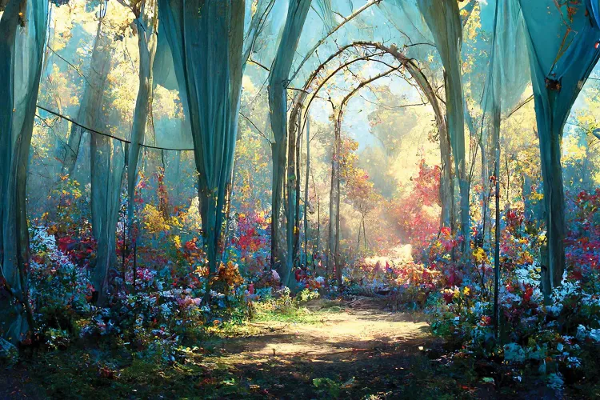

Its light green grass and soft leaves embrace you, but never lose sense of who you are. The woodland was closed for many years. We're not sure why, though, as this information was erased.
Contact Us:
Email: wanderingsisters@gmail.com
Number: 0999203044113
Director: Patrusheva Violetta, Zimina Alisa